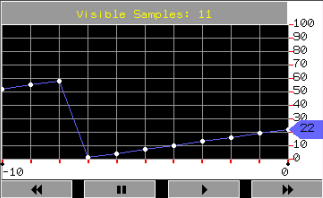
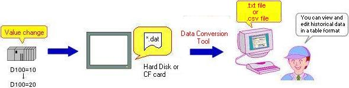
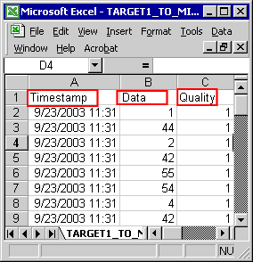

|
|
|
|
|
|
|
|
You can display logged variable data samples using:
Trend graphs (Real-time, Historical, Plot, and Block)
.csv or .txt file.
In Vijeo-Designer, you can create different types of trend graphs (Real-time, Historical, Plot, or Block) to graph changes in variable values. Create a Real-time trend graph by using the Trend icon in the Graphical Objects toolbar. Create a Historical, Plot, or Block trend graph by using a Toolchest part in the Toolchest window's Trend folder. For Toolchest Trend Graph parts, not all properties will be updated dynamically in the Editor.
A data sample is a variable's value and data quality at a specific date and time and is represented on the trend graph as a data point. If there are no changes in the variable values or the values cannot be retrieved, the trend graph will not display a data point for the data sample.
Real-time Trend Graph: Displays data collected over a given period, based on the specified number of samples to display and the number of available samples for the variable. See Section 13.1.2.1, Real-Time Trend Graphs.

Historical Trend Graph: Displays both current and historical data that was collected over a given period or by the trigger method. See Section 13.1.2.2, Historical Trend Graphs.

Plot Trend Graph: Displays the data samples collected using the trigger data collection method. See Section 13.1.2.3, Plot Trend Graphs.

Block Trend Graph: Displays multiple variable values at a point in time. See Section 13.1.2.4, Block Trend Graphs.

You can keep a record of changes in variable values by using data logging files. The data logging files are saved in binary format (*.dat), which you can convert to a .csv file or .txt file using the Data Manager tool. Once the data is output to a .csv/.txt file, you can open, edit, and view the output file in a spreadsheet application or text editor.

The image below shows an example of a converted .csv file.

The following table describes the contents of a .csv file.
|
Item |
Description |
|
Time stamp |
Shows time stamps in either a date format, or the number of seconds from the epoch time (January 1st, 1970, 0:00:00). |
|
Data |
Displays the variable's value as a real number. |
|
Quality |
Indicates the data quality with 0, 1, 2, or 3 values.
|